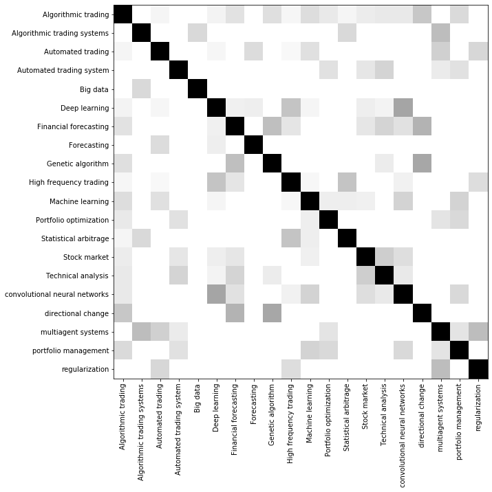
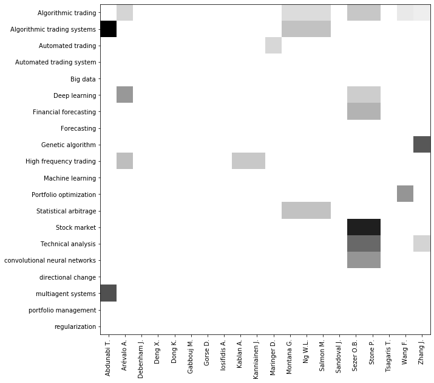

Matrix Analysis¶
In this part, a second level analysis of the bibliographical information is done.
[1]:
import pandas as pd
[2]:
records = pd.read_json('demo-keywords.json', orient='records', lines=True)
Keywords per year¶
[3]:
from techMiner import termByTerm
[4]:
termByTerm(
df=records,
termA='Keywords',
termB='Year',
sepA=';',
sepB=None).head()
[4]:
| Keywords | Year | Num Documents | |
|---|---|---|---|
| 0 | ?-stable processes | 2018 | 1 |
| 1 | ANFIS | 2014 | 1 |
| 2 | ANFIS ensemble | 2014 | 1 |
| 3 | ANN | 2014 | 1 |
| 4 | Adaptive GP trading system | 2017 | 1 |
[5]:
termByTerm(
df=records,
termA='Keywords',
termB='Year',
sepA=';',
sepB=None,
minmax=(2,3)).head() ## minimum and maximum values in the matrix
[5]:
| Keywords | Year | Num Documents | |
|---|---|---|---|
| 9 | Algorithmic trading | 2008 | 2 |
| 11 | Algorithmic trading | 2010 | 2 |
| 15 | Algorithmic trading | 2015 | 2 |
| 16 | Algorithmic trading | 2016 | 3 |
| 18 | Algorithmic trading | 2018 | 3 |
[6]:
from techMiner import heatmap
heatmap(
termByTerm(
df=records,
termA='Keywords',
termB='Year',
sepA=';',
sepB=None,
minmax=(2,8)),
ascendingA=False, ascendingB=False)

[7]:
from techMiner import alt_heatmap
alt_heatmap(
termByTerm(
df=records,
termA='Keywords',
termB='Year',
sepA=';',
sepB=None,
minmax=(2,8)))
[7]:

[8]:
from techMiner import alt_circleplot
alt_circleplot(
termByTerm(
df=records,
termA='Keywords',
termB='Year',
sepA=';',
sepB=None,
minmax=(2,8)))
[8]:

[9]:
m = termByTerm(
df=records,
termA='Keywords',
termB='Year',
sepA=';',
sepB=None,
minmax=(2,8))
m
[9]:
| Keywords | Year | Num Documents | |
|---|---|---|---|
| 9 | Algorithmic trading | 2008 | 2 |
| 11 | Algorithmic trading | 2010 | 2 |
| 12 | Algorithmic trading | 2012 | 6 |
| 14 | Algorithmic trading | 2014 | 5 |
| 15 | Algorithmic trading | 2015 | 2 |
| 16 | Algorithmic trading | 2016 | 3 |
| 17 | Algorithmic trading | 2017 | 8 |
| 18 | Algorithmic trading | 2018 | 3 |
| 19 | Algorithmic trading | 2019 | 4 |
| 36 | Automated trading | 2010 | 5 |
| 37 | Automated trading | 2012 | 4 |
| 38 | Automated trading | 2014 | 2 |
| 40 | Automated trading | 2019 | 2 |
| 44 | Automated trading system | 2018 | 3 |
| 54 | Big data | 2019 | 2 |
| 81 | Data mining | 2017 | 2 |
| 86 | Decision support system | 2017 | 2 |
| 90 | Deep learning | 2017 | 2 |
| 91 | Deep learning | 2018 | 4 |
| 92 | Deep learning | 2019 | 4 |
| 124 | Finance | 2019 | 2 |
| 126 | Financial Engineering | 2019 | 2 |
| 128 | Financial Markets | 2019 | 2 |
| 130 | Financial forecasting | 2017 | 3 |
| 131 | Financial forecasting | 2018 | 2 |
| 151 | Forex | 2017 | 2 |
| 169 | Genetic algorithm | 2017 | 3 |
| 181 | High frequency trading | 2009 | 2 |
| 182 | High frequency trading | 2012 | 2 |
| 183 | High frequency trading | 2013 | 2 |
| 184 | High frequency trading | 2014 | 2 |
| 185 | High frequency trading | 2016 | 3 |
| 186 | High frequency trading | 2017 | 2 |
| 187 | High frequency trading | 2018 | 2 |
| 188 | High frequency trading | 2019 | 4 |
| 190 | High-frequency data | 2012 | 2 |
| 215 | LSTM | 2019 | 2 |
| 218 | Limit order book | 2012 | 2 |
| 230 | Machine learning | 2017 | 3 |
| 231 | Machine learning | 2018 | 3 |
| 232 | Machine learning | 2019 | 4 |
| 287 | Portfolio optimization | 2018 | 2 |
| 317 | Sentiment analysis | 2019 | 2 |
| 329 | Statistical arbitrage | 2019 | 2 |
| 334 | Stock market | 2018 | 3 |
| 349 | Technical analysis | 2017 | 2 |
| 350 | Technical analysis | 2018 | 3 |
| 388 | agent-based modeling | 2017 | 2 |
| 397 | classification | 2019 | 2 |
| 404 | convolutional neural networks | 2018 | 3 |
| 412 | directional change | 2017 | 3 |
| 438 | multiagent systems | 2013 | 2 |
| 454 | portfolio management | 2018 | 2 |
| 455 | portfolio optimisation | 2012 | 2 |
| 461 | regularization | 2012 | 2 |
| 465 | sample size | 2012 | 2 |
| 477 | technical indicators | 2019 | 2 |
[10]:
from techMiner import matrix
m = matrix(m)
m
[10]:
| 2008 | 2009 | 2010 | 2011 | 2012 | 2013 | 2014 | 2015 | 2016 | 2017 | 2018 | 2019 | |
|---|---|---|---|---|---|---|---|---|---|---|---|---|
| Algorithmic trading | 2.0 | 0.0 | 2.0 | 0.0 | 6.0 | 0.0 | 5.0 | 2.0 | 3.0 | 8.0 | 3.0 | 4.0 |
| Automated trading | 0.0 | 0.0 | 5.0 | 0.0 | 4.0 | 0.0 | 2.0 | 0.0 | 0.0 | 0.0 | 0.0 | 2.0 |
| Automated trading system | 0.0 | 0.0 | 0.0 | 0.0 | 0.0 | 0.0 | 0.0 | 0.0 | 0.0 | 0.0 | 3.0 | 0.0 |
| Big data | 0.0 | 0.0 | 0.0 | 0.0 | 0.0 | 0.0 | 0.0 | 0.0 | 0.0 | 0.0 | 0.0 | 2.0 |
| Data mining | 0.0 | 0.0 | 0.0 | 0.0 | 0.0 | 0.0 | 0.0 | 0.0 | 0.0 | 2.0 | 0.0 | 0.0 |
| Decision support system | 0.0 | 0.0 | 0.0 | 0.0 | 0.0 | 0.0 | 0.0 | 0.0 | 0.0 | 2.0 | 0.0 | 0.0 |
| Deep learning | 0.0 | 0.0 | 0.0 | 0.0 | 0.0 | 0.0 | 0.0 | 0.0 | 0.0 | 2.0 | 4.0 | 4.0 |
| Finance | 0.0 | 0.0 | 0.0 | 0.0 | 0.0 | 0.0 | 0.0 | 0.0 | 0.0 | 0.0 | 0.0 | 2.0 |
| Financial Engineering | 0.0 | 0.0 | 0.0 | 0.0 | 0.0 | 0.0 | 0.0 | 0.0 | 0.0 | 0.0 | 0.0 | 2.0 |
| Financial Markets | 0.0 | 0.0 | 0.0 | 0.0 | 0.0 | 0.0 | 0.0 | 0.0 | 0.0 | 0.0 | 0.0 | 2.0 |
| Financial forecasting | 0.0 | 0.0 | 0.0 | 0.0 | 0.0 | 0.0 | 0.0 | 0.0 | 0.0 | 3.0 | 2.0 | 0.0 |
| Forex | 0.0 | 0.0 | 0.0 | 0.0 | 0.0 | 0.0 | 0.0 | 0.0 | 0.0 | 2.0 | 0.0 | 0.0 |
| Genetic algorithm | 0.0 | 0.0 | 0.0 | 0.0 | 0.0 | 0.0 | 0.0 | 0.0 | 0.0 | 3.0 | 0.0 | 0.0 |
| High frequency trading | 0.0 | 2.0 | 0.0 | 0.0 | 2.0 | 2.0 | 2.0 | 0.0 | 3.0 | 2.0 | 2.0 | 4.0 |
| High-frequency data | 0.0 | 0.0 | 0.0 | 0.0 | 2.0 | 0.0 | 0.0 | 0.0 | 0.0 | 0.0 | 0.0 | 0.0 |
| LSTM | 0.0 | 0.0 | 0.0 | 0.0 | 0.0 | 0.0 | 0.0 | 0.0 | 0.0 | 0.0 | 0.0 | 2.0 |
| Limit order book | 0.0 | 0.0 | 0.0 | 0.0 | 2.0 | 0.0 | 0.0 | 0.0 | 0.0 | 0.0 | 0.0 | 0.0 |
| Machine learning | 0.0 | 0.0 | 0.0 | 0.0 | 0.0 | 0.0 | 0.0 | 0.0 | 0.0 | 3.0 | 3.0 | 4.0 |
| Portfolio optimization | 0.0 | 0.0 | 0.0 | 0.0 | 0.0 | 0.0 | 0.0 | 0.0 | 0.0 | 0.0 | 2.0 | 0.0 |
| Sentiment analysis | 0.0 | 0.0 | 0.0 | 0.0 | 0.0 | 0.0 | 0.0 | 0.0 | 0.0 | 0.0 | 0.0 | 2.0 |
| Statistical arbitrage | 0.0 | 0.0 | 0.0 | 0.0 | 0.0 | 0.0 | 0.0 | 0.0 | 0.0 | 0.0 | 0.0 | 2.0 |
| Stock market | 0.0 | 0.0 | 0.0 | 0.0 | 0.0 | 0.0 | 0.0 | 0.0 | 0.0 | 0.0 | 3.0 | 0.0 |
| Technical analysis | 0.0 | 0.0 | 0.0 | 0.0 | 0.0 | 0.0 | 0.0 | 0.0 | 0.0 | 2.0 | 3.0 | 0.0 |
| agent-based modeling | 0.0 | 0.0 | 0.0 | 0.0 | 0.0 | 0.0 | 0.0 | 0.0 | 0.0 | 2.0 | 0.0 | 0.0 |
| classification | 0.0 | 0.0 | 0.0 | 0.0 | 0.0 | 0.0 | 0.0 | 0.0 | 0.0 | 0.0 | 0.0 | 2.0 |
| convolutional neural networks | 0.0 | 0.0 | 0.0 | 0.0 | 0.0 | 0.0 | 0.0 | 0.0 | 0.0 | 0.0 | 3.0 | 0.0 |
| directional change | 0.0 | 0.0 | 0.0 | 0.0 | 0.0 | 0.0 | 0.0 | 0.0 | 0.0 | 3.0 | 0.0 | 0.0 |
| multiagent systems | 0.0 | 0.0 | 0.0 | 0.0 | 0.0 | 2.0 | 0.0 | 0.0 | 0.0 | 0.0 | 0.0 | 0.0 |
| portfolio management | 0.0 | 0.0 | 0.0 | 0.0 | 0.0 | 0.0 | 0.0 | 0.0 | 0.0 | 0.0 | 2.0 | 0.0 |
| portfolio optimisation | 0.0 | 0.0 | 0.0 | 0.0 | 2.0 | 0.0 | 0.0 | 0.0 | 0.0 | 0.0 | 0.0 | 0.0 |
| regularization | 0.0 | 0.0 | 0.0 | 0.0 | 2.0 | 0.0 | 0.0 | 0.0 | 0.0 | 0.0 | 0.0 | 0.0 |
| sample size | 0.0 | 0.0 | 0.0 | 0.0 | 2.0 | 0.0 | 0.0 | 0.0 | 0.0 | 0.0 | 0.0 | 0.0 |
| technical indicators | 0.0 | 0.0 | 0.0 | 0.0 | 0.0 | 0.0 | 0.0 | 0.0 | 0.0 | 0.0 | 0.0 | 2.0 |
[11]:
from techMiner import kmeans
centers, clusters = kmeans(m, n_clusters = 3)
[12]:
centers
[12]:
| 2008 | 2009 | 2010 | 2011 | 2012 | 2013 | 2014 | 2015 | 2016 | 2017 | 2018 | 2019 | |
|---|---|---|---|---|---|---|---|---|---|---|---|---|
| Cluster0 | 4.163336e-17 | 4.163336e-17 | 0.172414 | 0.0 | 0.482759 | 0.068966 | 0.068966 | 4.163336e-17 | 8.326673e-17 | 0.655172 | 0.62069 | 0.689655 |
| Cluster1 | 0.000000e+00 | 6.666667e-01 | 0.000000 | 0.0 | 0.666667 | 0.666667 | 0.666667 | 0.000000e+00 | 1.000000e+00 | 2.333333 | 3.00000 | 4.000000 |
| Cluster2 | 2.000000e+00 | 0.000000e+00 | 2.000000 | 0.0 | 6.000000 | 0.000000 | 5.000000 | 2.000000e+00 | 3.000000e+00 | 8.000000 | 3.00000 | 4.000000 |
[13]:
heatmap(centers, transform=False)

[33]:
clusters.sort_values('cluster')
[33]:
| cluster | |
|---|---|
| Algorithmic trading | 0 |
| convolutional neural networks | 0 |
| Technical analysis | 0 |
| Stock market | 0 |
| Deep learning | 0 |
| Financial forecasting | 0 |
| directional change | 1 |
| Statistical arbitrage | 1 |
| Portfolio optimization | 1 |
| Machine learning | 1 |
| High frequency trading | 1 |
| Genetic algorithm | 1 |
| Forecasting | 1 |
| Big data | 1 |
| Automated trading system | 1 |
| Automated trading | 1 |
| portfolio management | 1 |
| regularization | 1 |
| Algorithmic trading systems | 2 |
| multiagent systems | 2 |
[35]:
m.loc[clusters.sort_values('cluster').index,:]
[35]:
| Abdunabi T. | Arévalo A. | Debenham J. | Deng X. | Dong K. | Gabbouj M. | Gorse D. | Iosifidis A. | Kablan A. | Kanniainen J. | ... | Montana G. | Ng W.L. | Salmon M. | Sandoval J. | Sezer O.B. | Stone P. | Tsagaris T. | Wang F. | Zhang J. | cluster | |
|---|---|---|---|---|---|---|---|---|---|---|---|---|---|---|---|---|---|---|---|---|---|
| Algorithmic trading | 0.000000 | 0.189832 | 0.0 | 0.0 | 0.0 | 0.0 | 0.0 | 0.0 | 0.000000 | 0.000000 | ... | 0.164399 | 0.164399 | 0.164399 | 0.0 | 0.232495 | 0.232495 | 0.0 | 0.116248 | 0.094916 | 0 |
| convolutional neural networks | 0.000000 | 0.000000 | 0.0 | 0.0 | 0.0 | 0.0 | 0.0 | 0.0 | 0.000000 | 0.000000 | ... | 0.000000 | 0.000000 | 0.000000 | 0.0 | 0.353553 | 0.353553 | 0.0 | 0.000000 | 0.000000 | 0 |
| Technical analysis | 0.000000 | 0.000000 | 0.0 | 0.0 | 0.0 | 0.0 | 0.0 | 0.0 | 0.000000 | 0.000000 | ... | 0.000000 | 0.000000 | 0.000000 | 0.0 | 0.471405 | 0.471405 | 0.0 | 0.000000 | 0.192450 | 0 |
| Stock market | 0.000000 | 0.000000 | 0.0 | 0.0 | 0.0 | 0.0 | 0.0 | 0.0 | 0.000000 | 0.000000 | ... | 0.000000 | 0.000000 | 0.000000 | 0.0 | 0.632456 | 0.632456 | 0.0 | 0.000000 | 0.000000 | 0 |
| Deep learning | 0.000000 | 0.348155 | 0.0 | 0.0 | 0.0 | 0.0 | 0.0 | 0.0 | 0.000000 | 0.000000 | ... | 0.000000 | 0.000000 | 0.000000 | 0.0 | 0.213201 | 0.213201 | 0.0 | 0.000000 | 0.000000 | 0 |
| Financial forecasting | 0.000000 | 0.000000 | 0.0 | 0.0 | 0.0 | 0.0 | 0.0 | 0.0 | 0.000000 | 0.000000 | ... | 0.000000 | 0.000000 | 0.000000 | 0.0 | 0.288675 | 0.288675 | 0.0 | 0.000000 | 0.000000 | 0 |
| directional change | 0.000000 | 0.000000 | 0.0 | 0.0 | 0.0 | 0.0 | 0.0 | 0.0 | 0.000000 | 0.000000 | ... | 0.000000 | 0.000000 | 0.000000 | 0.0 | 0.000000 | 0.000000 | 0.0 | 0.000000 | 0.000000 | 1 |
| Statistical arbitrage | 0.000000 | 0.000000 | 0.0 | 0.0 | 0.0 | 0.0 | 0.0 | 0.0 | 0.000000 | 0.000000 | ... | 0.250000 | 0.250000 | 0.250000 | 0.0 | 0.000000 | 0.000000 | 0.0 | 0.000000 | 0.000000 | 1 |
| Portfolio optimization | 0.000000 | 0.000000 | 0.0 | 0.0 | 0.0 | 0.0 | 0.0 | 0.0 | 0.000000 | 0.000000 | ... | 0.000000 | 0.000000 | 0.000000 | 0.0 | 0.000000 | 0.000000 | 0.0 | 0.353553 | 0.000000 | 1 |
| Machine learning | 0.000000 | 0.000000 | 0.0 | 0.0 | 0.0 | 0.0 | 0.0 | 0.0 | 0.000000 | 0.000000 | ... | 0.000000 | 0.000000 | 0.000000 | 0.0 | 0.000000 | 0.000000 | 0.0 | 0.000000 | 0.000000 | 1 |
| High frequency trading | 0.000000 | 0.264906 | 0.0 | 0.0 | 0.0 | 0.0 | 0.0 | 0.0 | 0.229416 | 0.229416 | ... | 0.000000 | 0.000000 | 0.000000 | 0.0 | 0.000000 | 0.000000 | 0.0 | 0.000000 | 0.000000 | 1 |
| Genetic algorithm | 0.000000 | 0.000000 | 0.0 | 0.0 | 0.0 | 0.0 | 0.0 | 0.0 | 0.000000 | 0.000000 | ... | 0.000000 | 0.000000 | 0.000000 | 0.0 | 0.000000 | 0.000000 | 0.0 | 0.000000 | 0.516398 | 1 |
| Forecasting | 0.000000 | 0.000000 | 0.0 | 0.0 | 0.0 | 0.0 | 0.0 | 0.0 | 0.000000 | 0.000000 | ... | 0.000000 | 0.000000 | 0.000000 | 0.0 | 0.000000 | 0.000000 | 0.0 | 0.000000 | 0.000000 | 1 |
| Big data | 0.000000 | 0.000000 | 0.0 | 0.0 | 0.0 | 0.0 | 0.0 | 0.0 | 0.000000 | 0.000000 | ... | 0.000000 | 0.000000 | 0.000000 | 0.0 | 0.000000 | 0.000000 | 0.0 | 0.000000 | 0.000000 | 1 |
| Automated trading system | 0.000000 | 0.000000 | 0.0 | 0.0 | 0.0 | 0.0 | 0.0 | 0.0 | 0.000000 | 0.000000 | ... | 0.000000 | 0.000000 | 0.000000 | 0.0 | 0.000000 | 0.000000 | 0.0 | 0.000000 | 0.000000 | 1 |
| Automated trading | 0.000000 | 0.000000 | 0.0 | 0.0 | 0.0 | 0.0 | 0.0 | 0.0 | 0.000000 | 0.000000 | ... | 0.000000 | 0.000000 | 0.000000 | 0.0 | 0.000000 | 0.000000 | 0.0 | 0.000000 | 0.000000 | 1 |
| portfolio management | 0.000000 | 0.000000 | 0.0 | 0.0 | 0.0 | 0.0 | 0.0 | 0.0 | 0.000000 | 0.000000 | ... | 0.000000 | 0.000000 | 0.000000 | 0.0 | 0.000000 | 0.000000 | 0.0 | 0.000000 | 0.000000 | 1 |
| regularization | 0.000000 | 0.000000 | 0.0 | 0.0 | 0.0 | 0.0 | 0.0 | 0.0 | 0.000000 | 0.000000 | ... | 0.000000 | 0.000000 | 0.000000 | 0.0 | 0.000000 | 0.000000 | 0.0 | 0.000000 | 0.000000 | 1 |
| Algorithmic trading systems | 0.707107 | 0.000000 | 0.0 | 0.0 | 0.0 | 0.0 | 0.0 | 0.0 | 0.000000 | 0.000000 | ... | 0.250000 | 0.250000 | 0.250000 | 0.0 | 0.000000 | 0.000000 | 0.0 | 0.000000 | 0.000000 | 2 |
| multiagent systems | 0.534522 | 0.000000 | 0.0 | 0.0 | 0.0 | 0.0 | 0.0 | 0.0 | 0.000000 | 0.000000 | ... | 0.000000 | 0.000000 | 0.000000 | 0.0 | 0.000000 | 0.000000 | 0.0 | 0.000000 | 0.000000 | 2 |
20 rows × 21 columns
Document type per year¶
[15]:
termByTerm(
df=records,
termA='Document Type',
termB='Year',
sepA=None,
sepB=None).head()
[15]:
| Document Type | Year | Num Documents | |
|---|---|---|---|
| 0 | Article | 2004 | 1 |
| 1 | Article | 2006 | 1 |
| 2 | Article | 2007 | 1 |
| 3 | Article | 2008 | 1 |
| 4 | Article | 2009 | 2 |
Keywords by year¶
[16]:
termByTerm(
df=records,
termA='Keywords',
termB='Year',
sepA=';',
sepB=None).head()
[16]:
| Keywords | Year | Num Documents | |
|---|---|---|---|
| 0 | ?-stable processes | 2018 | 1 |
| 1 | ANFIS | 2014 | 1 |
| 2 | ANFIS ensemble | 2014 | 1 |
| 3 | ANN | 2014 | 1 |
| 4 | Adaptive GP trading system | 2017 | 1 |
Authors per document type¶
[17]:
termByTerm(
df=records,
termA='Authors',
termB='Document Type',
sepA=',',
sepB=None).head()
[17]:
| Authors | Document Type | Num Documents | |
|---|---|---|---|
| 0 | Adams N. | Article | 1 |
| 1 | Addis D. | Conference Paper | 1 |
| 2 | Adegboye A. | Conference Paper | 1 |
| 3 | Agapitos A. | Conference Paper | 1 |
| 4 | Ali A.M. | Conference Paper | 1 |
Autocorrelation¶
[18]:
from techMiner import correlation
correlation(
df=records,
termA='Keywords',
sepA=';'
)
[18]:
| Keywords (row) | Keywords (col) | Autocorrelation | |
|---|---|---|---|
| 0 | Algorithmic trading | Algorithmic trading | 1.000000 |
| 1 | Algorithmic trading | Algorithmic trading systems | 0.000000 |
| 2 | Algorithmic trading | Automated trading | 0.084895 |
| 3 | Algorithmic trading | Automated trading system | 0.000000 |
| 4 | Algorithmic trading | Big data | 0.000000 |
| 5 | Algorithmic trading | Deep learning | 0.099136 |
| 6 | Algorithmic trading | Financial forecasting | 0.201347 |
| 7 | Algorithmic trading | Forecasting | 0.000000 |
| 8 | Algorithmic trading | Genetic algorithm | 0.220564 |
| 9 | Algorithmic trading | High frequency trading | 0.075431 |
| 10 | Algorithmic trading | Machine learning | 0.227980 |
| 11 | Algorithmic trading | Portfolio optimization | 0.164399 |
| 12 | Algorithmic trading | Statistical arbitrage | 0.082199 |
| 13 | Algorithmic trading | Stock market | 0.147043 |
| 14 | Algorithmic trading | Technical analysis | 0.164399 |
| 15 | Algorithmic trading | convolutional neural networks | 0.164399 |
| 16 | Algorithmic trading | directional change | 0.328798 |
| 17 | Algorithmic trading | multiagent systems | 0.000000 |
| 18 | Algorithmic trading | portfolio management | 0.246598 |
| 19 | Algorithmic trading | regularization | 0.000000 |
| 20 | Algorithmic trading systems | Algorithmic trading | 0.000000 |
| 21 | Algorithmic trading systems | Algorithmic trading systems | 1.000000 |
| 22 | Algorithmic trading systems | Automated trading | 0.000000 |
| 23 | Algorithmic trading systems | Automated trading system | 0.000000 |
| 24 | Algorithmic trading systems | Big data | 0.250000 |
| 25 | Algorithmic trading systems | Deep learning | 0.000000 |
| 26 | Algorithmic trading systems | Financial forecasting | 0.000000 |
| 27 | Algorithmic trading systems | Forecasting | 0.000000 |
| 28 | Algorithmic trading systems | Genetic algorithm | 0.000000 |
| 29 | Algorithmic trading systems | High frequency trading | 0.000000 |
| ... | ... | ... | ... |
| 370 | portfolio management | Machine learning | 0.277350 |
| 371 | portfolio management | Portfolio optimization | 0.250000 |
| 372 | portfolio management | Statistical arbitrage | 0.000000 |
| 373 | portfolio management | Stock market | 0.000000 |
| 374 | portfolio management | Technical analysis | 0.000000 |
| 375 | portfolio management | convolutional neural networks | 0.250000 |
| 376 | portfolio management | directional change | 0.000000 |
| 377 | portfolio management | multiagent systems | 0.188982 |
| 378 | portfolio management | portfolio management | 1.000000 |
| 379 | portfolio management | regularization | 0.000000 |
| 380 | regularization | Algorithmic trading | 0.000000 |
| 381 | regularization | Algorithmic trading systems | 0.000000 |
| 382 | regularization | Automated trading | 0.258199 |
| 383 | regularization | Automated trading system | 0.000000 |
| 384 | regularization | Big data | 0.000000 |
| 385 | regularization | Deep learning | 0.000000 |
| 386 | regularization | Financial forecasting | 0.000000 |
| 387 | regularization | Forecasting | 0.000000 |
| 388 | regularization | Genetic algorithm | 0.000000 |
| 389 | regularization | High frequency trading | 0.229416 |
| 390 | regularization | Machine learning | 0.000000 |
| 391 | regularization | Portfolio optimization | 0.000000 |
| 392 | regularization | Statistical arbitrage | 0.000000 |
| 393 | regularization | Stock market | 0.000000 |
| 394 | regularization | Technical analysis | 0.000000 |
| 395 | regularization | convolutional neural networks | 0.000000 |
| 396 | regularization | directional change | 0.000000 |
| 397 | regularization | multiagent systems | 0.377964 |
| 398 | regularization | portfolio management | 0.000000 |
| 399 | regularization | regularization | 1.000000 |
400 rows × 3 columns
[19]:
alt_circleplot(
correlation(
df=records,
termA='Keywords',
sepA=';'))
[19]:

[20]:
heatmap(
correlation(
df=records,
termA='Keywords',
sepA=';'))

Crosscorrelation¶
[21]:
correlation(
df=records,
termA='Keywords',
sepA=';',
termB='Authors',
sepB=','
)
[21]:
| Keywords | Authors | Crosscorrelation | |
|---|---|---|---|
| 0 | Algorithmic trading | Abdunabi T. | 0.000000 |
| 1 | Algorithmic trading | Arévalo A. | 0.189832 |
| 2 | Algorithmic trading | Debenham J. | 0.000000 |
| 3 | Algorithmic trading | Deng X. | 0.000000 |
| 4 | Algorithmic trading | Dong K. | 0.000000 |
| 5 | Algorithmic trading | Gabbouj M. | 0.000000 |
| 6 | Algorithmic trading | Gorse D. | 0.000000 |
| 7 | Algorithmic trading | Iosifidis A. | 0.000000 |
| 8 | Algorithmic trading | Kablan A. | 0.000000 |
| 9 | Algorithmic trading | Kanniainen J. | 0.000000 |
| 10 | Algorithmic trading | Maringer D. | 0.000000 |
| 11 | Algorithmic trading | Montana G. | 0.164399 |
| 12 | Algorithmic trading | Ng W.L. | 0.164399 |
| 13 | Algorithmic trading | Salmon M. | 0.164399 |
| 14 | Algorithmic trading | Sandoval J. | 0.000000 |
| 15 | Algorithmic trading | Sezer O.B. | 0.232495 |
| 16 | Algorithmic trading | Stone P. | 0.232495 |
| 17 | Algorithmic trading | Tsagaris T. | 0.000000 |
| 18 | Algorithmic trading | Wang F. | 0.116248 |
| 19 | Algorithmic trading | Zhang J. | 0.094916 |
| 20 | Algorithmic trading systems | Abdunabi T. | 0.707107 |
| 21 | Algorithmic trading systems | Arévalo A. | 0.000000 |
| 22 | Algorithmic trading systems | Debenham J. | 0.000000 |
| 23 | Algorithmic trading systems | Deng X. | 0.000000 |
| 24 | Algorithmic trading systems | Dong K. | 0.000000 |
| 25 | Algorithmic trading systems | Gabbouj M. | 0.000000 |
| 26 | Algorithmic trading systems | Gorse D. | 0.000000 |
| 27 | Algorithmic trading systems | Iosifidis A. | 0.000000 |
| 28 | Algorithmic trading systems | Kablan A. | 0.000000 |
| 29 | Algorithmic trading systems | Kanniainen J. | 0.000000 |
| ... | ... | ... | ... |
| 370 | portfolio management | Maringer D. | 0.000000 |
| 371 | portfolio management | Montana G. | 0.000000 |
| 372 | portfolio management | Ng W.L. | 0.000000 |
| 373 | portfolio management | Salmon M. | 0.000000 |
| 374 | portfolio management | Sandoval J. | 0.000000 |
| 375 | portfolio management | Sezer O.B. | 0.000000 |
| 376 | portfolio management | Stone P. | 0.000000 |
| 377 | portfolio management | Tsagaris T. | 0.000000 |
| 378 | portfolio management | Wang F. | 0.000000 |
| 379 | portfolio management | Zhang J. | 0.000000 |
| 380 | regularization | Abdunabi T. | 0.000000 |
| 381 | regularization | Arévalo A. | 0.000000 |
| 382 | regularization | Debenham J. | 0.000000 |
| 383 | regularization | Deng X. | 0.000000 |
| 384 | regularization | Dong K. | 0.000000 |
| 385 | regularization | Gabbouj M. | 0.000000 |
| 386 | regularization | Gorse D. | 0.000000 |
| 387 | regularization | Iosifidis A. | 0.000000 |
| 388 | regularization | Kablan A. | 0.000000 |
| 389 | regularization | Kanniainen J. | 0.000000 |
| 390 | regularization | Maringer D. | 0.000000 |
| 391 | regularization | Montana G. | 0.000000 |
| 392 | regularization | Ng W.L. | 0.000000 |
| 393 | regularization | Salmon M. | 0.000000 |
| 394 | regularization | Sandoval J. | 0.000000 |
| 395 | regularization | Sezer O.B. | 0.000000 |
| 396 | regularization | Stone P. | 0.000000 |
| 397 | regularization | Tsagaris T. | 0.000000 |
| 398 | regularization | Wang F. | 0.000000 |
| 399 | regularization | Zhang J. | 0.000000 |
400 rows × 3 columns
[22]:
heatmap(
correlation(
df=records,
termA='Keywords',
sepA=';',
termB='Authors',
sepB=','))

[25]:
m = correlation(
df=records,
termA='Keywords',
sepA=';',
termB='Authors',
sepB=','
)
m = matrix(m)
m
[25]:
| Abdunabi T. | Arévalo A. | Debenham J. | Deng X. | Dong K. | Gabbouj M. | Gorse D. | Iosifidis A. | Kablan A. | Kanniainen J. | Maringer D. | Montana G. | Ng W.L. | Salmon M. | Sandoval J. | Sezer O.B. | Stone P. | Tsagaris T. | Wang F. | Zhang J. | |
|---|---|---|---|---|---|---|---|---|---|---|---|---|---|---|---|---|---|---|---|---|
| Algorithmic trading | 0.000000 | 0.189832 | 0.0 | 0.0 | 0.0 | 0.0 | 0.0 | 0.0 | 0.000000 | 0.000000 | 0.000000 | 0.164399 | 0.164399 | 0.164399 | 0.0 | 0.232495 | 0.232495 | 0.0 | 0.116248 | 0.094916 |
| Algorithmic trading systems | 0.707107 | 0.000000 | 0.0 | 0.0 | 0.0 | 0.0 | 0.0 | 0.0 | 0.000000 | 0.000000 | 0.000000 | 0.250000 | 0.250000 | 0.250000 | 0.0 | 0.000000 | 0.000000 | 0.0 | 0.000000 | 0.000000 |
| Automated trading | 0.000000 | 0.000000 | 0.0 | 0.0 | 0.0 | 0.0 | 0.0 | 0.0 | 0.000000 | 0.000000 | 0.182574 | 0.000000 | 0.000000 | 0.000000 | 0.0 | 0.000000 | 0.000000 | 0.0 | 0.000000 | 0.000000 |
| Automated trading system | 0.000000 | 0.000000 | 0.0 | 0.0 | 0.0 | 0.0 | 0.0 | 0.0 | 0.000000 | 0.000000 | 0.000000 | 0.000000 | 0.000000 | 0.000000 | 0.0 | 0.000000 | 0.000000 | 0.0 | 0.000000 | 0.000000 |
| Big data | 0.000000 | 0.000000 | 0.0 | 0.0 | 0.0 | 0.0 | 0.0 | 0.0 | 0.000000 | 0.000000 | 0.000000 | 0.000000 | 0.000000 | 0.000000 | 0.0 | 0.000000 | 0.000000 | 0.0 | 0.000000 | 0.000000 |
| Deep learning | 0.000000 | 0.348155 | 0.0 | 0.0 | 0.0 | 0.0 | 0.0 | 0.0 | 0.000000 | 0.000000 | 0.000000 | 0.000000 | 0.000000 | 0.000000 | 0.0 | 0.213201 | 0.213201 | 0.0 | 0.000000 | 0.000000 |
| Financial forecasting | 0.000000 | 0.000000 | 0.0 | 0.0 | 0.0 | 0.0 | 0.0 | 0.0 | 0.000000 | 0.000000 | 0.000000 | 0.000000 | 0.000000 | 0.000000 | 0.0 | 0.288675 | 0.288675 | 0.0 | 0.000000 | 0.000000 |
| Forecasting | 0.000000 | 0.000000 | 0.0 | 0.0 | 0.0 | 0.0 | 0.0 | 0.0 | 0.000000 | 0.000000 | 0.000000 | 0.000000 | 0.000000 | 0.000000 | 0.0 | 0.000000 | 0.000000 | 0.0 | 0.000000 | 0.000000 |
| Genetic algorithm | 0.000000 | 0.000000 | 0.0 | 0.0 | 0.0 | 0.0 | 0.0 | 0.0 | 0.000000 | 0.000000 | 0.000000 | 0.000000 | 0.000000 | 0.000000 | 0.0 | 0.000000 | 0.000000 | 0.0 | 0.000000 | 0.516398 |
| High frequency trading | 0.000000 | 0.264906 | 0.0 | 0.0 | 0.0 | 0.0 | 0.0 | 0.0 | 0.229416 | 0.229416 | 0.000000 | 0.000000 | 0.000000 | 0.000000 | 0.0 | 0.000000 | 0.000000 | 0.0 | 0.000000 | 0.000000 |
| Machine learning | 0.000000 | 0.000000 | 0.0 | 0.0 | 0.0 | 0.0 | 0.0 | 0.0 | 0.000000 | 0.000000 | 0.000000 | 0.000000 | 0.000000 | 0.000000 | 0.0 | 0.000000 | 0.000000 | 0.0 | 0.000000 | 0.000000 |
| Portfolio optimization | 0.000000 | 0.000000 | 0.0 | 0.0 | 0.0 | 0.0 | 0.0 | 0.0 | 0.000000 | 0.000000 | 0.000000 | 0.000000 | 0.000000 | 0.000000 | 0.0 | 0.000000 | 0.000000 | 0.0 | 0.353553 | 0.000000 |
| Statistical arbitrage | 0.000000 | 0.000000 | 0.0 | 0.0 | 0.0 | 0.0 | 0.0 | 0.0 | 0.000000 | 0.000000 | 0.000000 | 0.250000 | 0.250000 | 0.250000 | 0.0 | 0.000000 | 0.000000 | 0.0 | 0.000000 | 0.000000 |
| Stock market | 0.000000 | 0.000000 | 0.0 | 0.0 | 0.0 | 0.0 | 0.0 | 0.0 | 0.000000 | 0.000000 | 0.000000 | 0.000000 | 0.000000 | 0.000000 | 0.0 | 0.632456 | 0.632456 | 0.0 | 0.000000 | 0.000000 |
| Technical analysis | 0.000000 | 0.000000 | 0.0 | 0.0 | 0.0 | 0.0 | 0.0 | 0.0 | 0.000000 | 0.000000 | 0.000000 | 0.000000 | 0.000000 | 0.000000 | 0.0 | 0.471405 | 0.471405 | 0.0 | 0.000000 | 0.192450 |
| convolutional neural networks | 0.000000 | 0.000000 | 0.0 | 0.0 | 0.0 | 0.0 | 0.0 | 0.0 | 0.000000 | 0.000000 | 0.000000 | 0.000000 | 0.000000 | 0.000000 | 0.0 | 0.353553 | 0.353553 | 0.0 | 0.000000 | 0.000000 |
| directional change | 0.000000 | 0.000000 | 0.0 | 0.0 | 0.0 | 0.0 | 0.0 | 0.0 | 0.000000 | 0.000000 | 0.000000 | 0.000000 | 0.000000 | 0.000000 | 0.0 | 0.000000 | 0.000000 | 0.0 | 0.000000 | 0.000000 |
| multiagent systems | 0.534522 | 0.000000 | 0.0 | 0.0 | 0.0 | 0.0 | 0.0 | 0.0 | 0.000000 | 0.000000 | 0.000000 | 0.000000 | 0.000000 | 0.000000 | 0.0 | 0.000000 | 0.000000 | 0.0 | 0.000000 | 0.000000 |
| portfolio management | 0.000000 | 0.000000 | 0.0 | 0.0 | 0.0 | 0.0 | 0.0 | 0.0 | 0.000000 | 0.000000 | 0.000000 | 0.000000 | 0.000000 | 0.000000 | 0.0 | 0.000000 | 0.000000 | 0.0 | 0.000000 | 0.000000 |
| regularization | 0.000000 | 0.000000 | 0.0 | 0.0 | 0.0 | 0.0 | 0.0 | 0.0 | 0.000000 | 0.000000 | 0.000000 | 0.000000 | 0.000000 | 0.000000 | 0.0 | 0.000000 | 0.000000 | 0.0 | 0.000000 | 0.000000 |
[26]:
centers, clusters = kmeans(m, n_clusters = 3)
[27]:
centers
[27]:
| Abdunabi T. | Arévalo A. | Debenham J. | Deng X. | Dong K. | Gabbouj M. | Gorse D. | Iosifidis A. | Kablan A. | Kanniainen J. | Maringer D. | Montana G. | Ng W.L. | Salmon M. | Sandoval J. | Sezer O.B. | Stone P. | Tsagaris T. | Wang F. | Zhang J. | |
|---|---|---|---|---|---|---|---|---|---|---|---|---|---|---|---|---|---|---|---|---|
| Cluster0 | 0.000000e+00 | 0.089664 | 0.0 | 0.0 | 0.0 | 0.0 | 0.0 | 0.0 | 0.000000 | 0.000000 | 0.000000 | 0.027400 | 0.027400 | 0.027400 | 0.0 | 0.365297 | 0.365297 | 0.0 | 0.019375 | 0.047894 |
| Cluster1 | -6.938894e-18 | 0.022076 | 0.0 | 0.0 | 0.0 | 0.0 | 0.0 | 0.0 | 0.019118 | 0.019118 | 0.015215 | 0.020833 | 0.020833 | 0.020833 | 0.0 | 0.000000 | 0.000000 | 0.0 | 0.029463 | 0.043033 |
| Cluster2 | 6.208146e-01 | 0.000000 | 0.0 | 0.0 | 0.0 | 0.0 | 0.0 | 0.0 | 0.000000 | 0.000000 | 0.000000 | 0.125000 | 0.125000 | 0.125000 | 0.0 | 0.000000 | 0.000000 | 0.0 | 0.000000 | 0.000000 |
[28]:
heatmap(centers, transform=False)

[29]:
m['cluster'] = clusters
m = m.sort_values('cluster')
m
[29]:
| Abdunabi T. | Arévalo A. | Debenham J. | Deng X. | Dong K. | Gabbouj M. | Gorse D. | Iosifidis A. | Kablan A. | Kanniainen J. | ... | Montana G. | Ng W.L. | Salmon M. | Sandoval J. | Sezer O.B. | Stone P. | Tsagaris T. | Wang F. | Zhang J. | cluster | |
|---|---|---|---|---|---|---|---|---|---|---|---|---|---|---|---|---|---|---|---|---|---|
| Algorithmic trading | 0.000000 | 0.189832 | 0.0 | 0.0 | 0.0 | 0.0 | 0.0 | 0.0 | 0.000000 | 0.000000 | ... | 0.164399 | 0.164399 | 0.164399 | 0.0 | 0.232495 | 0.232495 | 0.0 | 0.116248 | 0.094916 | 0 |
| convolutional neural networks | 0.000000 | 0.000000 | 0.0 | 0.0 | 0.0 | 0.0 | 0.0 | 0.0 | 0.000000 | 0.000000 | ... | 0.000000 | 0.000000 | 0.000000 | 0.0 | 0.353553 | 0.353553 | 0.0 | 0.000000 | 0.000000 | 0 |
| Technical analysis | 0.000000 | 0.000000 | 0.0 | 0.0 | 0.0 | 0.0 | 0.0 | 0.0 | 0.000000 | 0.000000 | ... | 0.000000 | 0.000000 | 0.000000 | 0.0 | 0.471405 | 0.471405 | 0.0 | 0.000000 | 0.192450 | 0 |
| Stock market | 0.000000 | 0.000000 | 0.0 | 0.0 | 0.0 | 0.0 | 0.0 | 0.0 | 0.000000 | 0.000000 | ... | 0.000000 | 0.000000 | 0.000000 | 0.0 | 0.632456 | 0.632456 | 0.0 | 0.000000 | 0.000000 | 0 |
| Deep learning | 0.000000 | 0.348155 | 0.0 | 0.0 | 0.0 | 0.0 | 0.0 | 0.0 | 0.000000 | 0.000000 | ... | 0.000000 | 0.000000 | 0.000000 | 0.0 | 0.213201 | 0.213201 | 0.0 | 0.000000 | 0.000000 | 0 |
| Financial forecasting | 0.000000 | 0.000000 | 0.0 | 0.0 | 0.0 | 0.0 | 0.0 | 0.0 | 0.000000 | 0.000000 | ... | 0.000000 | 0.000000 | 0.000000 | 0.0 | 0.288675 | 0.288675 | 0.0 | 0.000000 | 0.000000 | 0 |
| directional change | 0.000000 | 0.000000 | 0.0 | 0.0 | 0.0 | 0.0 | 0.0 | 0.0 | 0.000000 | 0.000000 | ... | 0.000000 | 0.000000 | 0.000000 | 0.0 | 0.000000 | 0.000000 | 0.0 | 0.000000 | 0.000000 | 1 |
| Statistical arbitrage | 0.000000 | 0.000000 | 0.0 | 0.0 | 0.0 | 0.0 | 0.0 | 0.0 | 0.000000 | 0.000000 | ... | 0.250000 | 0.250000 | 0.250000 | 0.0 | 0.000000 | 0.000000 | 0.0 | 0.000000 | 0.000000 | 1 |
| Portfolio optimization | 0.000000 | 0.000000 | 0.0 | 0.0 | 0.0 | 0.0 | 0.0 | 0.0 | 0.000000 | 0.000000 | ... | 0.000000 | 0.000000 | 0.000000 | 0.0 | 0.000000 | 0.000000 | 0.0 | 0.353553 | 0.000000 | 1 |
| Machine learning | 0.000000 | 0.000000 | 0.0 | 0.0 | 0.0 | 0.0 | 0.0 | 0.0 | 0.000000 | 0.000000 | ... | 0.000000 | 0.000000 | 0.000000 | 0.0 | 0.000000 | 0.000000 | 0.0 | 0.000000 | 0.000000 | 1 |
| High frequency trading | 0.000000 | 0.264906 | 0.0 | 0.0 | 0.0 | 0.0 | 0.0 | 0.0 | 0.229416 | 0.229416 | ... | 0.000000 | 0.000000 | 0.000000 | 0.0 | 0.000000 | 0.000000 | 0.0 | 0.000000 | 0.000000 | 1 |
| Genetic algorithm | 0.000000 | 0.000000 | 0.0 | 0.0 | 0.0 | 0.0 | 0.0 | 0.0 | 0.000000 | 0.000000 | ... | 0.000000 | 0.000000 | 0.000000 | 0.0 | 0.000000 | 0.000000 | 0.0 | 0.000000 | 0.516398 | 1 |
| Forecasting | 0.000000 | 0.000000 | 0.0 | 0.0 | 0.0 | 0.0 | 0.0 | 0.0 | 0.000000 | 0.000000 | ... | 0.000000 | 0.000000 | 0.000000 | 0.0 | 0.000000 | 0.000000 | 0.0 | 0.000000 | 0.000000 | 1 |
| Big data | 0.000000 | 0.000000 | 0.0 | 0.0 | 0.0 | 0.0 | 0.0 | 0.0 | 0.000000 | 0.000000 | ... | 0.000000 | 0.000000 | 0.000000 | 0.0 | 0.000000 | 0.000000 | 0.0 | 0.000000 | 0.000000 | 1 |
| Automated trading system | 0.000000 | 0.000000 | 0.0 | 0.0 | 0.0 | 0.0 | 0.0 | 0.0 | 0.000000 | 0.000000 | ... | 0.000000 | 0.000000 | 0.000000 | 0.0 | 0.000000 | 0.000000 | 0.0 | 0.000000 | 0.000000 | 1 |
| Automated trading | 0.000000 | 0.000000 | 0.0 | 0.0 | 0.0 | 0.0 | 0.0 | 0.0 | 0.000000 | 0.000000 | ... | 0.000000 | 0.000000 | 0.000000 | 0.0 | 0.000000 | 0.000000 | 0.0 | 0.000000 | 0.000000 | 1 |
| portfolio management | 0.000000 | 0.000000 | 0.0 | 0.0 | 0.0 | 0.0 | 0.0 | 0.0 | 0.000000 | 0.000000 | ... | 0.000000 | 0.000000 | 0.000000 | 0.0 | 0.000000 | 0.000000 | 0.0 | 0.000000 | 0.000000 | 1 |
| regularization | 0.000000 | 0.000000 | 0.0 | 0.0 | 0.0 | 0.0 | 0.0 | 0.0 | 0.000000 | 0.000000 | ... | 0.000000 | 0.000000 | 0.000000 | 0.0 | 0.000000 | 0.000000 | 0.0 | 0.000000 | 0.000000 | 1 |
| Algorithmic trading systems | 0.707107 | 0.000000 | 0.0 | 0.0 | 0.0 | 0.0 | 0.0 | 0.0 | 0.000000 | 0.000000 | ... | 0.250000 | 0.250000 | 0.250000 | 0.0 | 0.000000 | 0.000000 | 0.0 | 0.000000 | 0.000000 | 2 |
| multiagent systems | 0.534522 | 0.000000 | 0.0 | 0.0 | 0.0 | 0.0 | 0.0 | 0.0 | 0.000000 | 0.000000 | ... | 0.000000 | 0.000000 | 0.000000 | 0.0 | 0.000000 | 0.000000 | 0.0 | 0.000000 | 0.000000 | 2 |
20 rows × 21 columns
[ ]:
[ ]:
Factor analysis¶
[23]:
from techMiner import pca
pca(df=records, term='Keywords', sep=';', n_components=5, N=40)
[23]:
| F0 | F1 | F2 | F3 | F4 | |
|---|---|---|---|---|---|
| Algorithmic trading | 0.870155 | 0.169856 | -0.238508 | -0.169523 | 0.113448 |
| Algorithmic trading systems | -0.042949 | -0.053030 | 0.073048 | -0.058060 | -0.127464 |
| Artificial intelligence | 0.010475 | -0.015337 | 0.051367 | -0.031447 | -0.051452 |
| Artificial neural networks | 0.009408 | -0.050709 | 0.011139 | 0.079449 | 0.042887 |
| Automated trading | -0.180484 | -0.460309 | -0.485976 | -0.247124 | 0.397531 |
| Automated trading system | -0.047012 | -0.081883 | 0.285841 | 0.075662 | -0.073601 |
| Big data | -0.033496 | -0.034401 | 0.081360 | -0.010045 | -0.092998 |
| Computational finance | 0.008351 | 0.119896 | -0.050651 | -0.005719 | 0.103464 |
| Data mining | 0.009731 | -0.025756 | -0.012367 | 0.057191 | -0.058729 |
| Decision support system | -0.003921 | 0.042166 | 0.015983 | -0.039015 | -0.021245 |
| Deep learning | -0.129738 | 0.289254 | -0.082148 | 0.302183 | 0.626396 |
| Efficient market hypothesis | 0.016908 | 0.092033 | -0.043278 | -0.067243 | -0.069635 |
| Finance | -0.013256 | 0.077884 | -0.072017 | 0.029008 | -0.153199 |
| Financial Markets | -0.056145 | -0.023713 | -0.100116 | 0.030016 | 0.082349 |
| Financial forecasting | 0.047740 | 0.129200 | 0.124812 | -0.029880 | 0.172168 |
| Forecasting | -0.063779 | -0.083745 | -0.010421 | -0.008028 | 0.135991 |
| Forex | -0.027819 | -0.060009 | -0.030931 | 0.049116 | -0.036673 |
| Fundamental analysis | -0.019153 | -0.033373 | 0.191783 | 0.058204 | 0.016907 |
| Genetic algorithm | 0.082069 | 0.012769 | 0.123408 | -0.073841 | 0.056963 |
| High frequency trading | -0.330133 | 0.701757 | -0.267461 | -0.161007 | -0.113393 |
| High-frequency data | 0.009720 | -0.009536 | 0.024693 | -0.020126 | -0.023276 |
| Intelligent agents | -0.037090 | -0.031952 | -0.007713 | 0.010433 | 0.076522 |
| LSTM | -0.033686 | -0.000437 | -0.003770 | 0.128517 | 0.088166 |
| Limit order book | -0.014003 | 0.020851 | -0.040006 | -0.029844 | 0.073479 |
| Machine learning | 0.051176 | -0.154235 | -0.442923 | 0.676248 | -0.264550 |
| Portfolio optimization | 0.035515 | -0.041054 | 0.006240 | 0.040697 | -0.118436 |
| Statistical arbitrage | -0.037063 | 0.119761 | -0.076449 | -0.004886 | -0.203090 |
| Stock market | 0.032249 | -0.011413 | 0.145839 | 0.185119 | 0.126272 |
| Technical analysis | 0.042689 | -0.019670 | 0.435720 | 0.156852 | 0.244430 |
| Trading strategy | -0.019883 | -0.032980 | 0.011418 | 0.072406 | -0.091037 |
| agent-based modeling | -0.049095 | 0.073094 | 0.006587 | -0.036438 | -0.044730 |
| classification | -0.044427 | 0.036827 | 0.011057 | -0.006382 | 0.016685 |
| convolutional neural networks | 0.020540 | 0.078026 | -0.042906 | 0.245257 | 0.185470 |
| directional change | 0.117458 | 0.032315 | 0.028039 | -0.099460 | 0.054218 |
| multiagent systems | -0.104334 | -0.213239 | -0.011296 | -0.235294 | -0.043396 |
| neural network | 0.043570 | -0.006654 | 0.068592 | -0.010752 | 0.001787 |
| portfolio management | 0.072006 | -0.028633 | -0.061555 | 0.112253 | -0.121740 |
| regularization | -0.091393 | -0.036957 | -0.091373 | -0.204436 | 0.010029 |
| sample size | -0.068383 | -0.067049 | -0.080856 | -0.175620 | 0.028805 |
| technical indicators | 0.011500 | -0.011496 | 0.040290 | 0.001581 | -0.016999 |
[24]:
from techMiner import pca2heatmap
pca2heatmap(
pca(df=records, term='Keywords', sep=';', n_components=5, N=40)
)

[36]:
from techMiner import network_graph
network_graph(matrix(m))
/usr/local/lib/python3.6/dist-packages/networkx/drawing/layout.py:702: RuntimeWarning: divide by zero encountered in true_divide
costargs = (np, 1 / (dist_mtx + np.eye(dist_mtx.shape[0]) * 1e-3),
---------------------------------------------------------------------------
ValueError Traceback (most recent call last)
<ipython-input-36-0bd36a47d5c8> in <module>
1 from techMiner import network_graph
----> 2 network_graph(matrix(m))
/usr/local/lib/python3.6/dist-packages/techMiner-0.0.0-py3.6.egg/techMiner/listByList.py in network_graph(matrix, save, name, corr_min, node_color, edge_color, edge_color2, node_size, fond_size)
579
580 #Edges weights for plot
--> 581 if max([i for i in weights.values()]) <=1:
582 width = ([(1+x)*2 for x in weights.values()])
583 else:
ValueError: max() arg is an empty sequence
<Figure size 432x288 with 0 Axes>
[ ]: